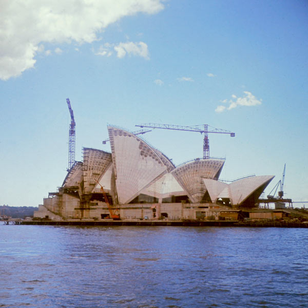

General Information
What is it?
The Sydney Opera House is a multi-venue performing arts centre in Sydney, Australia. It is one of the 20th century's most famous and distinctive buildings. Everyone is of course familiar with its graceful arches that define it, and you wouldn't want to miss an opportunity to see it up close. Though its name suggests a single venue, the building comprises multiple performance venues which together are among the busiest performing arts centres.
Things to Do
Performances
The Sydney Opera House hosts well over 1,500 performances annually, attended by more than 1.2 million people. So come on over, and watch a theatre performance or a musical performance first-hand. There are performances every night and each and every one of them is spectacular. We have performances that suit everyone so if magic isn't your thing then maybe an orchestral performance would suit your fancy. So come along, there's something for everyone in the family!
For more information, click here.
History
Origins of the Opera House
Planning began in the late 1940s, when Eugene Goossens, the Director of the NSW State Conservatorium of Music, lobbied for a suitable venue for large theatrical productions. The normal venue for such productions, the Sydney Town Hall, was not considered large enough. By 1954, Goossens succeeded in gaining the support of NSW Premier Joseph Cahill, who called for designs for a dedicated opera house. It was also Goossens who insisted that Bennelong Point be the site.
Design and Construction of the Opera House
The Fort Macquarie Tram Depot, occupying the site at the time of these plans, was demolished in 1958 and construction began in March 1959. It was built in three stages: stage I (1959–1963) consisted of building the upper podium; stage II (1963–1967) the construction of the outer shells; stage III (1967–1973) interior design and construction. Stage I was the hardest to build as it was the podium and needed to be constructed over water. Stage II was the most detailed as it was the roof and exterior. This intricate design has led to what we see today! Stage III was interior so it was the quickest stage. But the design was amazing and it still retains its majestic feel to this very day.
Location
Where you can find it
The location of the Sydney Opera House is at Bennelong Point. When the 1954 premier, Joseph Cahill allowed for the construction of the Opera House, he originally wanted it to be built next to Wynyard Station but Goossens came out on top. Nowadays, people can travel to the Opera House by catching a train to Circular Quay and taking a quick stroll to it. It's only about 200 metres away from the station.